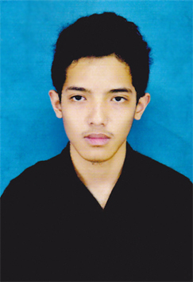

CV | Fadhlil Hadyan |
Pendidikan
|
Keanggotaan
|
BahasaIndonesia, Inggris |
|
jl pga rt. 2 no. 4, pondok barokah, kawasan pendidikan telkom, bandung phone: 082196749955 email: fadhlilhadyan0@gmail.com blog: fhadyan.students.telkomuniversity.ac.id |
KetertarikanProgramming, Pengembangan aplikasi mobile, pengembangan aplikasiweb, keamanan jaringan computer, pengembangan game. |